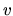
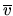

Next: Operators
Up: The DDI package
Previous: The DDI package
Contents
Besides extending manager capabilities, DDI introduces strong typing
for objects represented using BDDs, and uses ``handles'' as a
mechanism for allocation/freeing. More specifically, four types
are presently defined and managed as abstract data types,
all available in scalar and array form:
- Variable (Ddi_Var_t, Ddi_Vararray_t)
A variable is uniquely referenced by an integer index within a given manager,
and optionally by a variable name and/or an auxiliary index (auxid).
A variable  is also caracterized by a position in variable
ordering, which is not fixed (and generally differs from the index) if
dynamic variable ordering is enabled.
A variable is often represented in BDD packages (e.g. CUDD) by the
corresponding positive literal (a BDD).
We clearly distinguish a variable from the corresponding
literals ( and ), which
are in DDI Boolean functions (type Ddi_Bdd_t).
Variable arrays are useful whenever we need groups of variables with
well
defined positions, for instance to establish a correspondence between
present and next state variables (in FSM traversal), or between
Boolean functions and variables (in compose operations).
- Variable Sets (Ddi_Varset_t, Ddi_Varsetarray_t)
A variable set is a group of variables with no defined position or
ordering. Variable sets are represented in some packages (e.g. SIS) by
bit vectors, in CUDD by BDD cubes.
DDI internally uses the latter strategy, and externally provides
usual set operators. Variable sets are useful as inputs for
support management and quantification operators.
- Boolean Functions (Ddi_Bdd_t, Ddi_Bddarray_t)
A Boolean function is either a monolithic, partitioned (conjunctively
or disjunctively) or meta BDD. We adopt the BDD
acronym to emphasize the Decision Diagram based representation.
Partitioned representations are recursive. The terms of a
conjunctive form are BDDs, so they may be partitioned themselves.
Arrays of BDDs are useful whenever we need to represent vectors of
functions, e.g. for output or next state functions of circuits.
Internally, partitioned BDDs are stored as trees with monolithic BDDs
as leaves.
Meta BDDs are a particular BDD representation described in
[#!MetaBDDs!#].
- Expressions (Ddi_Expr_t, Ddi_Exprarray_t)
Expressions are more general than BDDs. They may include BDDs (since
monolitic and partitioned BDDa are Boolean expressions), but they are
expecially concieved for invariants and temporal logic (e.g. CTL)
formulas.
Moreover, expression leaves are not necessarily BDDs. They might be
string identifiers, to be associated to BDDs at later steps of symbolic
manipulations.
All of the above types are implemented by resorting to handles. The
handle mechanism hides the ref/deref BDD node allocation style
implemented in CUDD. Handles are dynamically allocated structures
pointing to CUDD BDD nodes, and only accessed to by pointers.
Handles are allocated, freed, duplicated. A handle represents a
reference to a BDD node, so a ref/reref operation is implicitly done
any time a handle is created/released. The only exception to this
general rule are variables, which are never duplicated nor freed (except
when freeing a DDI manager)
Handles are expecially useful as an intermediate portability layer
between the
higher levels and CUDD1. Moreover they enable storing additional
informations characterizing DDI entities, like name, code, extra
pointers.
Names are expecially concieved for debug and/or log purposes, codes
can distinguish particular subtypes (e.g. monolithic/partitioned forms
or operators in expressions). We use pointers for list based
management of allocated DDI objects, and to keep a reference to the
owner DDI manager (this avoids passing manager to most functions).
We call the above data types DDI nodes.
Next: Operators
Up: The DDI package
Previous: The DDI package
Contents
Gianpiero Cabodi
2001-03-25